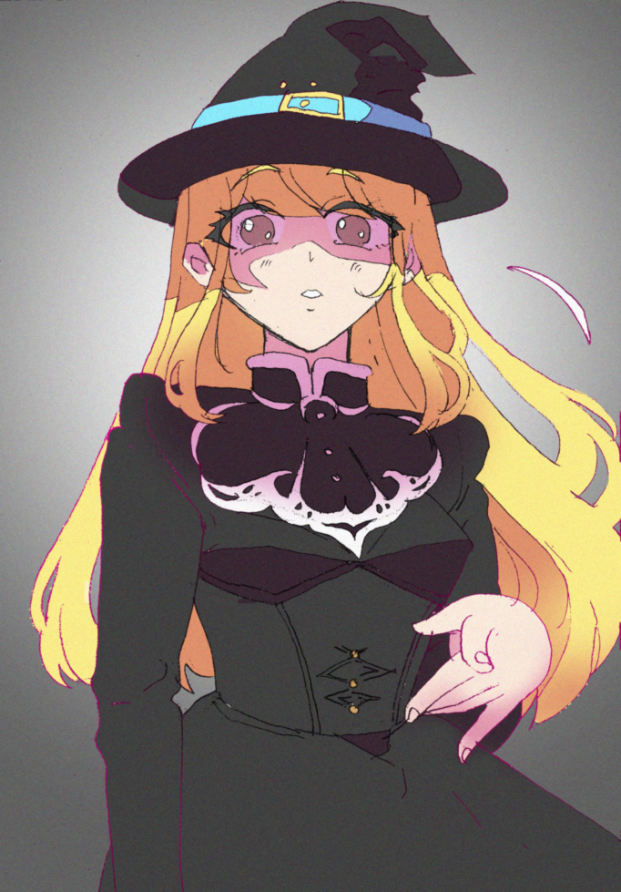
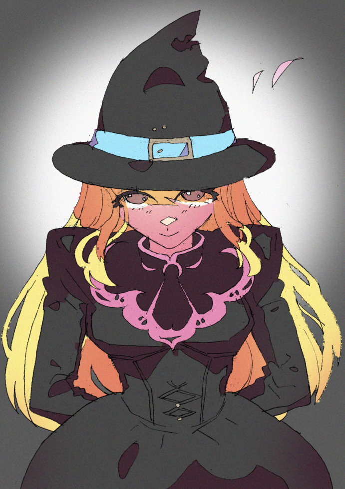
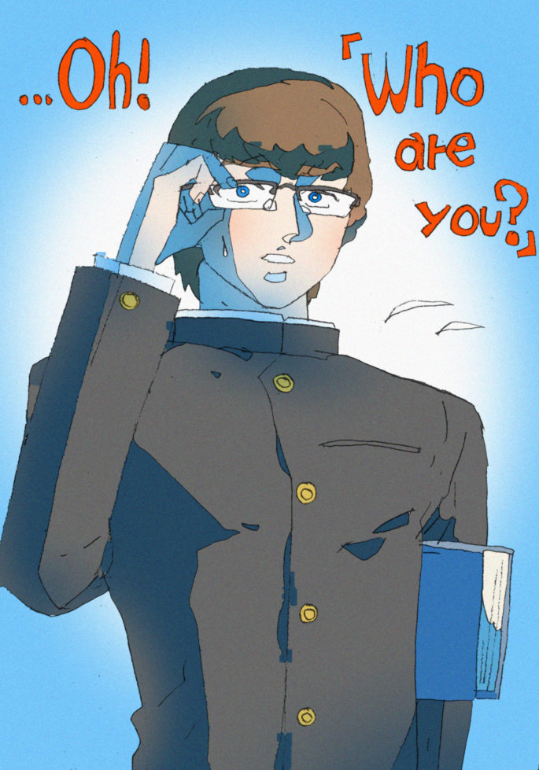
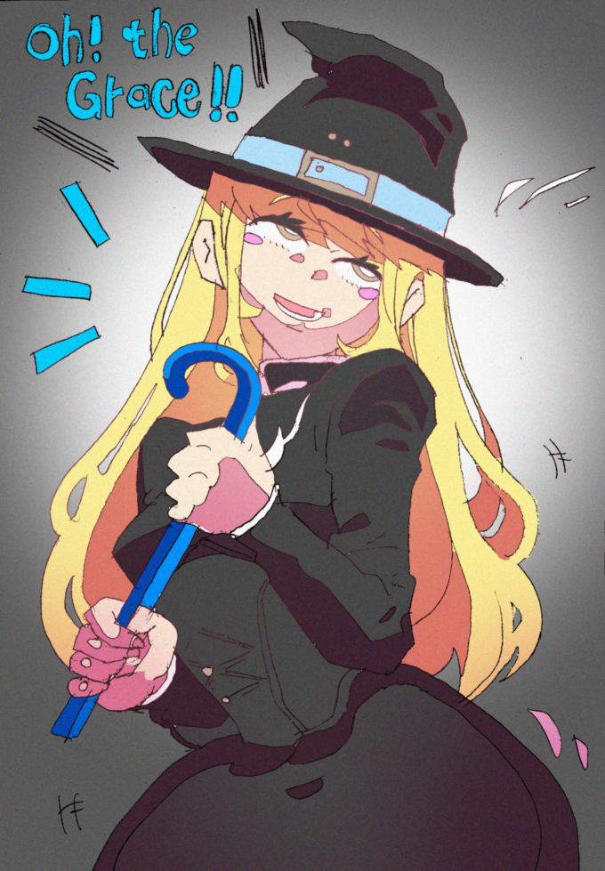

よくある女の子の絵だ。金髪に、黒い魔女みたいな装飾だ。
その視線の力を浴びている気になるか？ その女の子に見られている気分になるか？ 私はこの絵からはそういう感想は抱かない。
そういう書かれ方をしたのだ。 なぜそうとわかる？
仮に誰かに対する目くばせだったとして、誰に対する目くばせかがはっきりしない。 目上のパトロン男性に「例のあれ、終わった？」って言ってる時の顔か？ 同じ年齢の仲間の女の子に「だよね！」って言ってる時の、顔か？ あるいは誰かの事を目で追ったにしても、まるで感情が伴わない。飛んでる虫を追ったにしては、なぜ笑顔で？
この女の子は、カメラに向かって、いいかんじの笑みで微笑んだ。 それは「被写体」であって、もはや人物としての人格は希薄といわざるをえないだろう・・・ それはイラストを描くうえではもったいないのではないか？ もっと描くべきものがあったのでは？
このエントリでは、そういった従来のイラストによく見られる、「対象としての人物」が、 「外部圧力としての表現行使をしないで、ただカメラに向かってそれらしい表情とポーズを取るだけ」 という曖昧な表現手法をやめ、 今以上に「この絵を見る閲覧者になんらかの「圧力的表現」をしている」という 一種のボディランゲージの描写についての研究をしている。
さて、もしこの女の子が、画面の向こうの相手を意識しているなら、どんな表情を取るだろう？ そのためには、女の子の向こう側に、誰か女の子に語らう「相手」がいたことを、想定しなきゃならないだろう。 それの想像が難しいなら、こう想像してみるのも手だ。 「もしこの女の子が、閲覧者であるワタシと面と向かっていたら、この女の子は私に対し、どんな顔をするだろう？」
たとえば、これはどうか？
明らかに目の前に相手が現れて、それに気づいて反応した時の顔だろう？ これによって、被写体は被写体であることだけをやめ、「生きる人物」へと変貌するだろう。 さらにまた、反射的な反応の先に、思考的な反応があるだろう？ これはどうだ？
これは明らかに計算した反応だ。 だがよりかしこまった反応ではある。 あれ、目上の魔女の先生でも来たのかな？などと、さまざまな想像をさせられる。 それによって、この女の子の「人格」とかまで、想像が及ぶだろう。 一番最初の「被写体」なだけの女の子からはおよそ想像もつかないような人格性がだ。
さらにまた、この女の子の向こう側からやってきた相手のキャラクタと、その挙動も 詳細に設定してみよう。 自分であってもいいかもしれない。 だがより具体的に創作できるとなおよい。
これは学生の男の子だ。 道を歩いていたところ、あの魔女の女の子に出くわし、驚き、 そしておもわず「君は誰？」と聞いてしまったというところだ。
これに対する女の子の反応を考えて描くと、どうなるだろう？
あらあ！ なんてこった！ 見つかってしまったみたいね、とそんな感じに書いてみた。 この書き方によって、大分女の子の性格が「トリッキー寄り」であるように思われるようになった。 ほかにも、女の子の性格付けによって、さまざまな反応を作ることができるだろう。 これこそが、私の「外部圧力表現としての人物イラストの研究」 であると言いたい！
せめて貴方のイラストの制作の一助にでもなれば幸いだ。 2026/1/31 kmrno